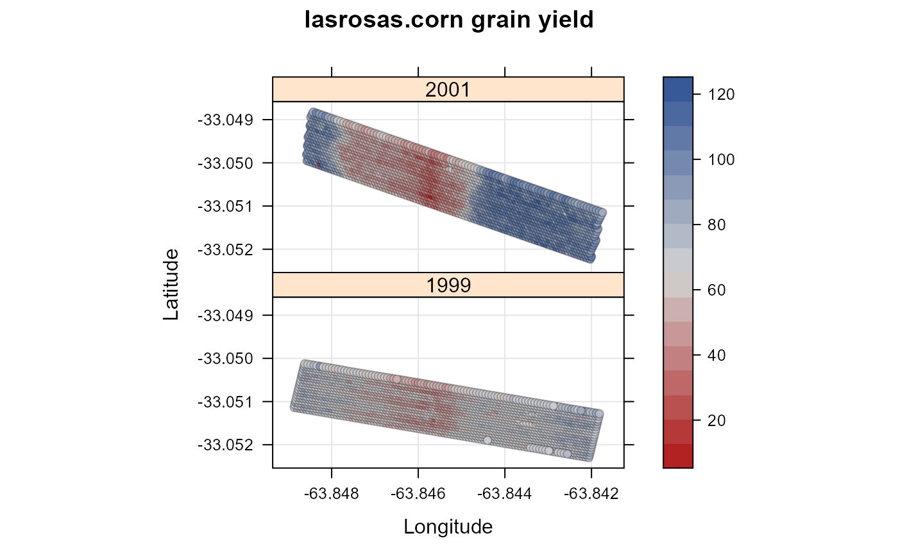
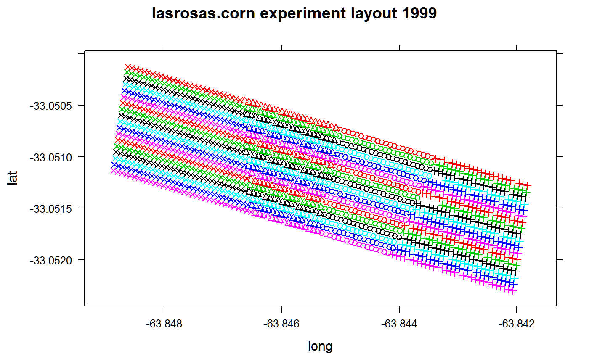
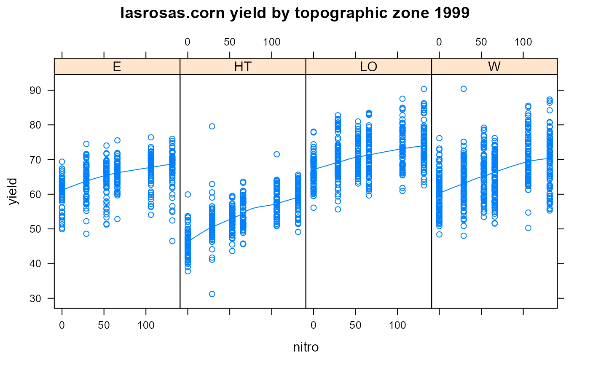

lasrosas.corn.RdYield monitor data for a corn field in Argentina with variable nitrogen.
data("lasrosas.corn")
A data frame with 3443 observations on the following 8 variables.
yearyear, 1999 or 2001
latlatitude
longlongitude
yieldyield, quintals/ha
nitronitrogen fertilizer, kg/ha
topotopographic factor
bvbrightness value (proxy for low organic matter content)
reprep factor
nfnitrogen as a factor, N0-N4
Corn yield and nitrogen fertilizer treatment with field characteristics for the Las Rosas farm, Rio Cuarto, Cordoba, Argentina.
Data has 6 nitro treatments, 3 reps, in strips.
Data collected using yield monitor, for harvests in 1999 and 2001.
The points within each long strip have been averaged so that the distance between points _within_ a strip is the same as the distance _between_ strips (9.8 meters).
The topographic factor a factor with levels W = West slope, HT = Hilltop, E = East slope, LO = Low East.
The 'rep' factor in this data was added by hand and did not appear in the original data.
Slightly different levels of nitrogen were used in the two years, so the nitrogen factor 'nf' was created to have common levels across years.
Published descriptions of the data describe the experiment design as having randomized nitrogen treatments. The nitrogen treatments were randomized within one rep, but the same randomization was used in the other two reps.
Anselin et al. used corn grain price of $6.85/quintal and nitrogen cost of $0.4348/kg.
The corners of the field in 1999 are: https://www.google.com/maps/place/-33.0501258,-63.8488636 https://www.google.com/maps/place/-33.05229635,-63.84181819
Anselin et al. found a significant response to nitrogen for slope. However, Bongiovanni and Lowenberg-DeBoer (2002) found that slope position was NOT significant in 2001.
The Las Rosas data files were obtained from https://geodacenter.asu.edu/sdata and converted from ESRI shape files to a flat data.frame.
Used with permission of the ASU GeoDa Center.
Bongiovanni and Lowenberg-DeBoer (2000). Nitrogen management in corn with a spatial regression model. Proceedings of the Fifth International Conference on Precision Agriculture
Anselin, L., R. Bongiovanni, J. Lowenberg-DeBoer (2004). A spatial econometric approach to the economics of site-specific nitrogen management in corn production. American Journal of Agricultural Economics, 86, 675--687.
Lambert, Lowenberg-Deboer, Bongiovanni (2004). A Comparison of Four Spatial Regression Models for Yield Monitor Data: A Case Study from Argentina. Precision Agriculture, 5, 579-600.
library(agridat) data(lasrosas.corn) dat <- lasrosas.corn # yield map libs(lattice,latticeExtra) # for panel.levelplot.points redblue <- colorRampPalette(c("firebrick", "lightgray", "#375997")) levelplot(yield ~ long*lat|factor(year), data=dat, main="lasrosas.corn grain yield", xlab="Longitude", ylab="Latitude", scales=list(alternating=FALSE), prepanel = prepanel.default.xyplot, panel = panel.levelplot.points, type = c("p", "g"), aspect = "iso", col.regions=redblue)d1 <- subset(dat, year==1999) # Experiment design xyplot(lat~long, data=d1, col=as.numeric(as.factor(d1$nitro)), pch=d1$topo, main="lasrosas.corn experiment layout 1999")# A quadratic response to nitrogen is suggested xyplot(yield~nitro|topo, data=d1, type=c('p','smooth'), layout=c(4,1), main="lasrosas.corn yield by topographic zone 1999")# Full-field quadratic response to nitrogen. Similar to Bongiovanni 2000, # table 1. m1 <- lm(yield ~ 1 + nitro + I(nitro^2), data=d1, subset=year==1999) coef(m1)#> (Intercept) nitro I(nitro^2) #> 59.2533084708 0.1130069973 -0.0003204139